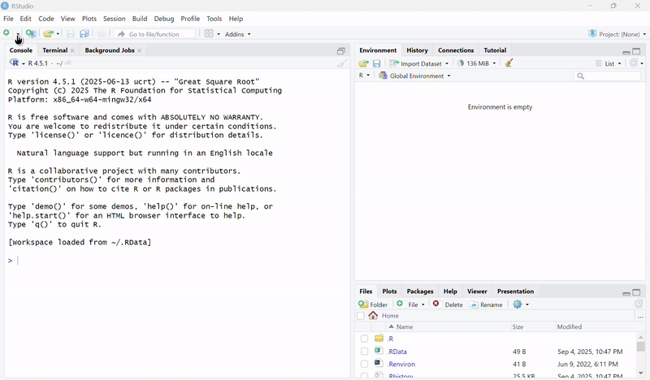

Week 3 Lab
Histograms, pipes, and Z-scores
File system review
- Before we start, let’s do some review
- Most of the bugs from last class came from files being stored somewhere you didn’t expect
- So let’s do some review with Slido
Now we can create our lab2 folder
We will be using the 2020heights.csv file today
- We need to make sure our 2020heights.csv is accessible in lab2
- You can copy and paste the csv file into lab2 from lab1
Open up R
- Create an R Project in your lab2 folder

Before we create our Rmd file…
How do you make sure to create the Rmd file in the proper folder?
Now create an EMPTY Rmd file
Remember, a .Rmd file, not .R
Save the Rmd file
After you create the file, make sure to save the Rmd file and name it lab2
Now that the file is created and saved
- We can add our YAML header and our first code chunk
- Let’s review how to properly add those
Slido poll
Let’s take a look in R
Load data
- Load tidyverse using
library(tidyverse) - Load 2020heights.csv and assign it to
data - Let’s take a look at the data
- You can use
head(data) - Or you can click on data under
environment
- You can use
Plot data
- In the console, install
ggplot2usinginstall.packages("ggplot2") - Then load
ggplot2at the top
ggplot basics
- Basic formulation:
ggplot(data, aes(x,y))- This doesn’t plot anything, but just provides important information, like the x and y variables, to ggplot
- You could just have
xin aesthetics for histograms
aesmeans “aesthetics”- To actually plot things, you add layers using
+ - Examples of layers:
geom_histogram()for histogramsgeom_point()for scatter plots
Let’s take a look in R
Manipulating dataframes with %>% (pipes)
%>% pass functions to dataframes
data <- data %>% mutate(a=mean(heights))
You can chain pipes together, like so
data <- data %>% mutate(a=mean(x)) %>% arrange(a)
Today’s deliverables
A knitted pdf document, not a screen shot. Ignore what Canvas says. When you are finished, check in with me.
5 histograms using ggplot
- normal (we did this already)
binwidth = 10binwidth = 0.1- choose your own binwidth
- binwidth = 2, with
fill = "pink"andcolor = "red"ingeom_histogram() - Beneath the code block, use plain text biefly describe the shape of the distribution. Is it symmetrical? Normal?
An updated dataframe with a new z_score column
- Use
%>%with themutate()function - To calculate the
z_score, usez_score = (heights-mean(heights)/sd(heights) - Use
head(data)to double check that the data has been updated - Use
arrange(abs(z_score))to sort the data by the absolutez_scorevalue, from lowest to highest - Beneath the code block, use plain text to list the 5
z_scoreswith the highest absolute values.